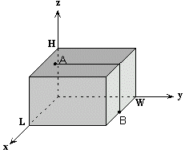

Two points A(x1, y1, z1) and
B(x2, y2, z2) are placed on the
surface of parallelepiped P = {(x, y, z): 0 <= x <= L, 0 <= y <= W,
0 <= z <= H} with L*W*H dimensions (see figure). These two
points can be linked with various curves lying on the surface of
P. You are to find out the square of the shortest curve length.
Parallelepiped dimensions L, W, H and coordinates of the points
are integers, 0 <= L,W,H <= 1000.
The input data file consists of a series of lines with each line containing 9 integers (in indicated order):
L, W, H, x1, y1, z1, x2, y2, z2. The
numbers are separated with spaces.
For each line of input there will be one line of output, which should contain the square of the shortest curve length between points A and B on the surface of P.
5 5 2 3 1 2 3 5 0
300 600 900 300 550 0 0 550 900
36
970000